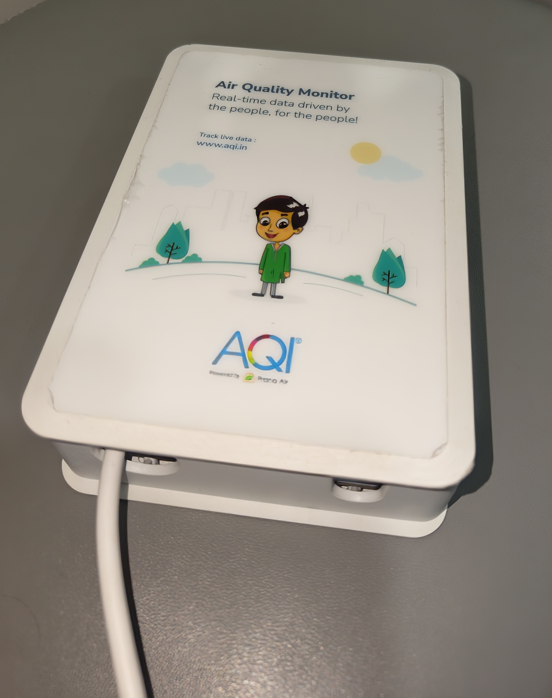
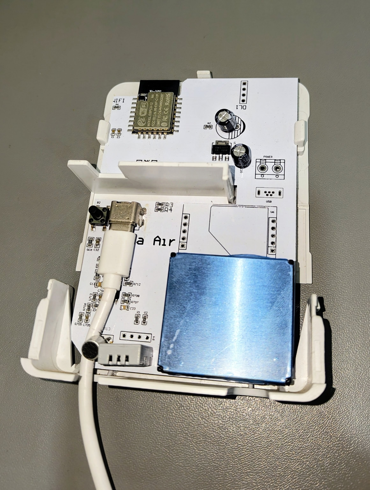
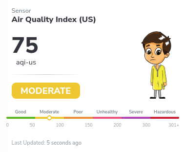
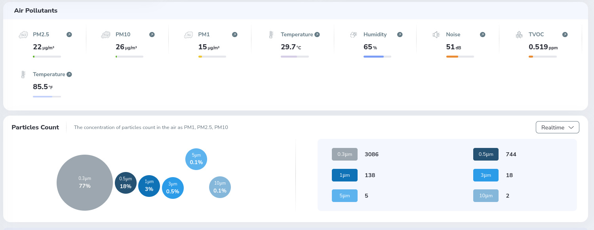
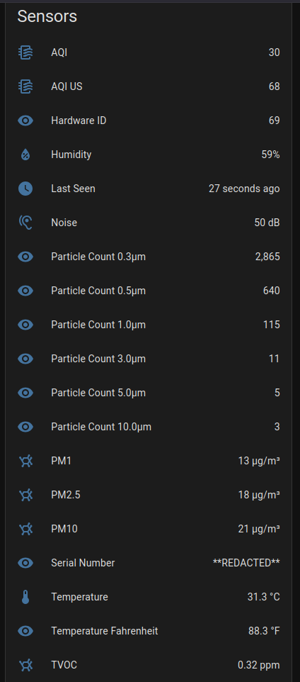
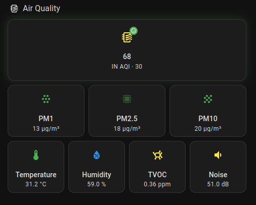

Why I Did This
I bought an AQI.in air quality monitor a while back, but what annoyed me was that the device acted like it owned itself. It decided where the numbers went and when they got sent out.


By default, the firmware just dumped data straight to a remote server:
http://data.aqi.in/api/v1/SendSensordata
Normally, viewing the device metrics meant looking through their standard web portal interface:


So the default path was essentially:
AQI Meter -> Internet -> AQI.in
I wanted it to work like this instead:
AQI Meter -> My LAN -> Home Assistant -> Wherever I want
I wanted Home Assistant to be the boss of the data. That way I could keep things local, run automations when air quality dropped, and only send stuff out to the cloud if I explicitly felt like it.
What I wanted to achieve
- Catch the HTTP data the meter was already shouting out.
- Keep the meter using its normal endpoint so I didn't have to rewrite the firmware.
- Turn those payloads into normal Home Assistant sensors.
- Handle cloud uploads right from Home Assistant.
- Change how it uploads without tearing the device apart or flashing it.
How I Figured It Out
Getting this to work took some trial and error. I didn't magically know what to do on day one. Here is how I chipped away at the problem piece by piece.
📦 Step 1: Finding the Meter on My Network
First, I needed to know where the thing even was. I logged into my router and checked the DHCP leases to see what new hardware had joined recently. Sure enough, an ESP32 chip popped up:
DHCPDISCOVER(br-lan) xx:xx:xx:xx:xx:xx DHCPOFFER(br-lan) 192.168.X.XXX DHCPREQUEST(br-lan) 192.168.X.XXX DHCPACK(br-lan) 192.168.X.XXX AQI-Meter-esp32c3
| Property | Value |
|---|---|
| Hostname | AQI-Meter-esp32c3 |
| IP Subnet | 192.168.X.XXX |
| MAC Address | XX:XX:XX:XX:XX:XX |
| Hardware | ESP32-C3 |
☁️ Step 2: Watching Where It Sent Data
Once I had its IP address, I watched its outbound DNS and traffic requests. It kept trying to talk to one specific address over and over:
http://data.aqi.in/api/v1/SendSensordata
Finding that URL was huge. It meant I didn't have to touch the device firmware yet. If I could spoof that domain name locally, I could catch whatever it was trying to send.
🌐 Step 3: Hijacking the Domain with AdGuard
Since I already use AdGuard Home on my network for DNS, setting up an intercept was pretty easy. I added a custom local DNS rewrite rule:
data.aqi.in -> 192.168.X.XXX (Local Server)
Now, whenever the meter thinks it is calling home to data.aqi.in, AdGuard quietly points it at my local server instead of letting the packet leave the house.
🔄 Step 4: Fixing Port Mismatches with Nginx
I hit a quick snag once the traffic arrived at my server. The meter's code assumes it is talking to standard port 80, but my Home Assistant instance hangs out on port 8123.
To smooth that over without breaking anything, I spun up a lightweight Nginx container to act as a translator:
server {
listen 80;
server_name data.aqi.in;
location = /api/v1/SendSensordata {
proxy_pass http://192.168.X.XXX:8123;
}
location / {
return 404;
}
}
Using an exact match on that specific URL means anything else hitting port 80 gets dropped immediately with a 404, keeping things clean.
📡 Step 5: Looking Inside the Request Body
With Nginx passing the traffic through, I could finally see what the meter was saying. I checked the logs and found a standard form post:
POST /api/v1/SendSensordata HTTP/1.1 Host: data.aqi.in User-Agent: ESP32HTTPClient Connection: keep-alive Content-Type: application/x-www-form-urlencoded Content-Length: 185
And tucked inside the body was a neat little JSON package:
jsonData={"serialNo":"XXXXXXXXXXXX","hwId":69,"data":[[3,19],[11,28.0],[30,82.3],[12,71],[5,13],[4,24],[1,31],[18,0.010],[71,2824],[72,647],[73,118],[74,20],[75,9],[76,5],[13,73]]}
This was a relief. It wasn't encrypted or locked behind some weird proprietary binary format. It was just plain text form data wrapped around a JSON string.
🔌 Step 6: Catching It in Home Assistant
The final coding piece was setting up a custom webhook endpoint inside Home Assistant matching the path:
/api/v1/SendSensordata
When the request lands, Home Assistant rips open the form body, pulls out the jsonData string, grabs the serial number and hardware ID, and maps all those numeric sensor keys into nice, clean entities.
There was one detail here that genuinely surprised me. The "serial number" wasn't really a secret device identifier at all. It was simply the meter's MAC address, represented as the serial number used by the API.
For example, using the sample MAC address A1B2C3D4E5F6, the API would represent it as the serial number A1B2C3D4E5F6. So whenever I refer to the meter's serial number below, I mean this MAC-based identifier.
For example, a device with a MAC address such as A1B2C3D4E5F6 could effectively use that value as its serial number when submitting data. The serial number appeared to be the only thing needed to associate a submission with a device; there was no additional authentication or device-specific credential involved in the request.
That means the serial number isn't just an identifier. In practice, it acts as the key that tells the server where the submitted data should go.
Decoding the Numbers
The inner array packs key value pairs where the first number is a sensor ID and the second is the reading. Here is what those IDs actually translate to:
| ID | Measurement |
|---|---|
| 1 | AQI |
| 3 | PM2.5 |
| 4 | PM10 |
| 5 | PM1 |
| 11 | Temperature °C |
| 30 | Temperature °F |
| 12 | Humidity |
| 18 | TVOC |
| 71 | Particle count 0.3 µm |
| 72 | Particle count 0.5 µm |
| 73 | Particle count 1.0 µm |
| 74 | Particle count 3.0 µm |
| 75 | Particle count 5.0 µm |
| 76 | Particle count 10.0 µm |
| 13 | Noise |
When you parse a live payload, it looks something like this:
[3,18] -> PM2.5 = 18 [11,28.1] -> 28.1 °C [30,82.5] -> 82.5 °F [12,71] -> 71% humidity [5,11] -> PM1 = 11 [4,21] -> PM10 = 21 [1,30] -> AQI = 30 [18,0.028] -> TVOC = 0.028 [13,52] -> noise = 52
The Final Architecture
With all the moving parts hooked up, the network flow looks like this:
LOCAL NETWORK
┌────────────────────────────────────────────────────────────┐
│ │
│ AQI Meter (ESP32-C3) │
│ 192.168.X.XXX │
│ │ │
│ │ POST data.aqi.in/api/v1/SendSensordata │
│ ▼ │
│ AdGuard Home │
│ data.aqi.in -> 192.168.X.XXX │
│ │ │
│ ▼ │
│ Nginx (:80) │
│ only /api/v1/SendSensordata │
│ │ │
│ ▼ │
│ Home Assistant (:8123) │
│ AQI.in custom integration │
│ │ │
│ ┌──────────────────────────┐ │
│ ▼ ▼ │
│ Local HA sensors Optional cloud forwarding │
└────────────────────────────────────────────────────────────┘
Who is in Control Now?
Before this, the hardware forced its own update schedule. Now, data stops at my house first:
AQI Meter -> AdGuard DNS rewrite -> Nginx -> Home Assistant
From there, Home Assistant handles what happens next:
┌── Keep locally
│
AQI Meter -> HA ──┼── Use in automations
│
└── Optional cloud forwarding
Optional Cloud Forwarding
If you still want your data feeding into the official website, you don't have to lose it. Home Assistant can push it right back out using a simple REST command:
rest_command:
aqi_cloud_forward:
url: "http://[EXTERNAL_IP_OR_HOST]/api/v1/SendSensordata"
method: POST
timeout: 30
headers:
Content-Type: "application/x-www-form-urlencoded"
Host: "data.aqi.in"
User-Agent: "ESP32HTTPClient"
The End Result
The meter shows up right inside Home Assistant now as a proper device with real entities, completely ignoring the public internet for its core functions.

The physical box still does its job, but the data hits my local network first. I get to trigger automations, keep my history locally, and decide if and when anything gets forwarded outward.

What used to be a closed cloud gadget is now just another fast, local sensor on my own dashboard.
Why Privacy Matters Here
The important part is having a choice. Your home telemetry should live in your home unless you explicitly decide to share it elsewhere.
And there was a second privacy concern I hadn't expected to find. Since this identifier is simply the device's MAC address, something as simple as the sample value A1B2C3D4E5F6 is enough to associate submitted data with that meter.
Once I understood that, the trust model became even more interesting. A MAC address is an identifier, not a secret credential, and it can sometimes be observed from network traffic or other device information.
So if someone discovered another meter's MAC address, they could potentially use it as the serial number when submitting data and inject fabricated readings into that device's dashboard. They would not gain control of the physical meter, but they could potentially compromise the integrity of the data associated with it.
I was honestly surprised by how simple that trust model was. There was no password, token, or stronger proof that the sender actually owned the meter just the device identifier. Even though that doesn't give someone control of the physical meter, it could still undermine the integrity of the data associated with it.
What I Want to Look at Next
Getting the data into Home Assistant was a fun win, but it naturally makes you wonder what else you can do with the hardware.
My next goal is to pull the firmware off the ESP32-C3 chip, poke around to see how it handles the physical sensors internally, and figure out if I can replace the stock software with a clean ESPHome build.
If that works out, I can turn this locked-down meter into something I completely own down to the bare metal.
That is the next rabbit hole.
Final Thoughts
This whole thing started because I wanted to know where my air quality meter was dumping its packets.
The fun part wasn't just finding the URL. It was realizing the device already had an open HTTP interface sitting there, just waiting for someone to point it in the right direction. And along the way, I found that the cloud side trusted a surprisingly small piece of information the meter's serial number which made the privacy and data-integrity implications much more interesting than I initially expected.
⭐ View on GitHub